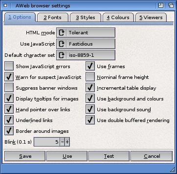

Browser Settings: Options

Use this chooser to select the HTML mode. It is recommended that you leave this set to Tolerant unless you encounter problems with a page.
This chooser determines if and how AWeb will interpret JavaScript in documents. It offers you the following choices:
| Off | No JavaScript is interpreted. |
|---|
| Fastidious | Picky mode - all JavaScript is executed, but execution stops on the first error detected.
|
|---|
| Omnivorous | Execution of all JavaScript programs is attempted, even of those with versions that are not yet implemented in AWeb. In this mode, no run-time error requesters are shown, and execution will continue even after errors are encountered.
WARNING: Because execution continues even after possibly vital JavaScript commands were in error, execution might go on endlessly. Use the "Break JavaScript" menu item or its shortcut (Amiga-X by default) to stop execution in this case. |
|---|
A character set defines which numerical value in received text represents which character. It is essentially a lookup table.
Some languages have more than a single character set in use, for example Russian documents may use either the "koi8-r" or "iso-8859-2" character set. However, most Amiga fonts support only one character set at a time.
AWeb now supports simple character set translation which enables documents in one character set to be displayed in another. You should set the Default character set to the character set of the fonts you are using in AWeb. This would typically be the same as that set in Workbench Locale preferences, or the nearest equivalent.
This checkbox controls if error requesters are shown when a JavaScript program stops in error, or not.
If this option is selected, AWeb warns you for two types of suspect scripts.
A warning is given when a script runs for one minute, indicating a possible endless loop. You now have the option to stop the script, but beware that some valid scripts just take up that much time. If you select to continue, you will be warned again after one minute.
A warning is also issued when during script execution the amount of free memory drops below one quarter of the free memory amount at the time the script was started. This might indicate that the script is allocating "many" objects and is about to eat up all available memory. Again, you have now the option to stop the script. Note that the cleaning up process might take a considerable amount of time, during which AWeb seems to hang, but is in fact returning the allocated memory to the system. If you decide to continue after this warning, you'll be warned again if the amount of free memory drops below one quarter of the free memory at the time of the latest warning.
Many pages on the net automatically open a banner or advertisement window as soon as they are loaded. Select this checkbox to get rid of those windows.
See here for an explanation what this option exactly does.
If this checkbox is selected, a small tooltip window will pop up when you keep the mouse still over an image that has an alternate text associated with it.
If this checkbox is selected, a different pointer image is used when the mouse pointer is over a hyperlink. By default a hand image is used, but you can change this.
The checkbox determines whether links should be displayed underlined or not. If Underlined is selected, new links are underlined with a solid line, and visited links will have a dashed line.
If this checkbox is selected, images that are links have a border in the appropriate colour.
This checkbox determines whether a border is rendered around an image in the event the HTML of the viewed page does not specify a BORDER attribute for a given IMG element.
This field determines the rate at which blinking text blinks. The number is the number of tenths of a second that each blinking phase (on or off) lasts. When you set this number to zero, blinking is disabled.
This checkbox determines if AWeb will use and display frames.
On small windows (like those on 200 or 256 high screens), a framed page often appears squeezed. If you check this checkbox, a larger height is used to layout the framed page against if the window has a small height. This will make the individual frames larger and easier to use.
When reading a page that contain a large table, most browsers don't display anything until the entire table is read in, which can take some time if you have a slow connection. AWeb supports incremental table display, which means the table is displayed while it is read in. The advantage is clear: you see more of the page in an earlier stage of loading.
There are however two drawbacks. First, a later section of the table may enforce different column widths, resulting in a redisplay of the entire table. In the worst case, this means that the table is redisplayed with every block of data read, causing an ugly flicker. Second, incremental table display may be about 10% slower than normal display, but probably this is more than compensated for by the earlier display.
With this checkbox you can switch between incremental and non-incremental table display.
Many pages contain background images or background colours. AWeb will display these only if this checkbox is checked. If it is unchecked, AWeb will use only the colours defined in the Browser colours settings page.
Some pages have a background sound attached. If this checkbox is selected, the sound plays every time you display the page. If it is unselected, the sound will not be played automatically. You can hear the sound only after selecting the "Control->Play background sound" menu item.
Double buffering is a rendering technique whereby web content is first rendered to a buffer in memory while is is being downloaded and the result being displayed when a section is complete. With this option disabled, AWeb simply renders content directly to the display as it comes in. However this may have undesirable side effects. For example, many modern websites typically use nested tables, which causes continuous "flickering" when the tables are relaid anew out as content arrives, which some may find visually undesirable.
There is a small performance penalty with double buffering, mostly noticable on 68K Amigas using a graphics card in a Zorro slot. You should leave this feature on unless you are using this type of Amiga and find the speed penalty too much.
 Viewers
Viewers  Settings requesters
Settings requesters  Fonts
Fonts